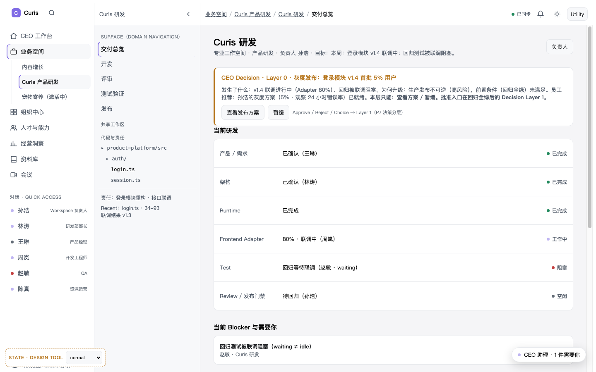
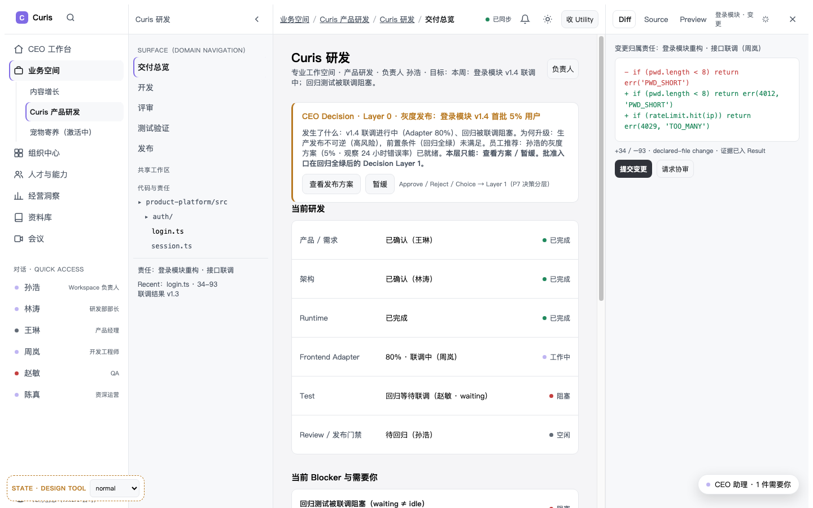
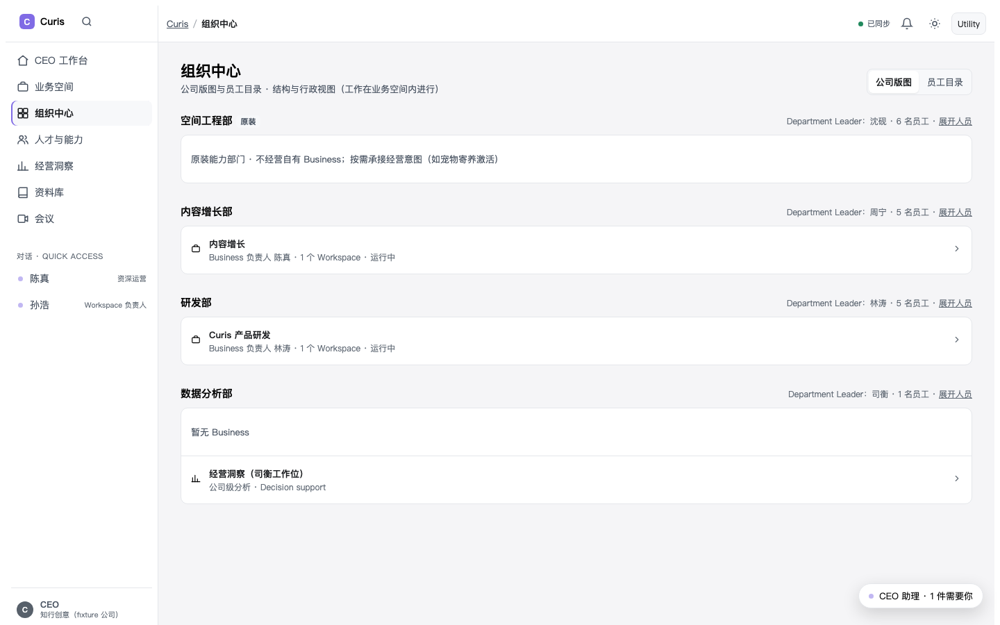
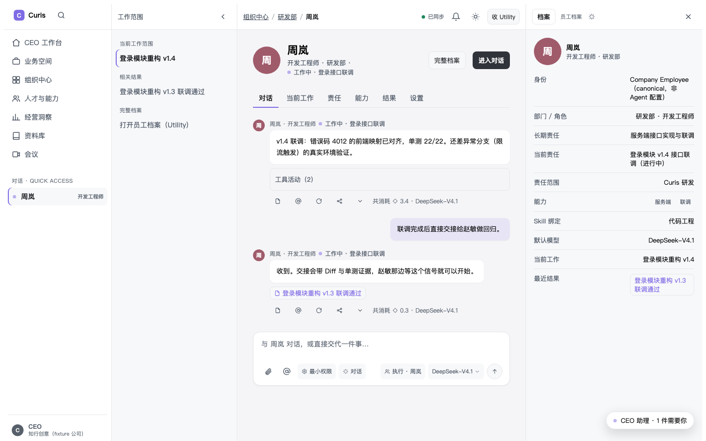
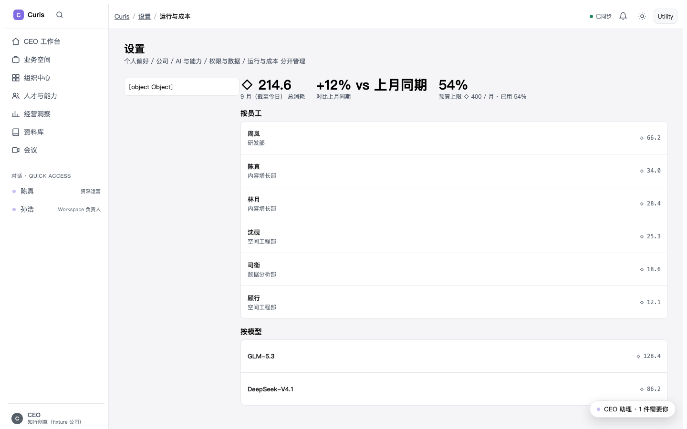
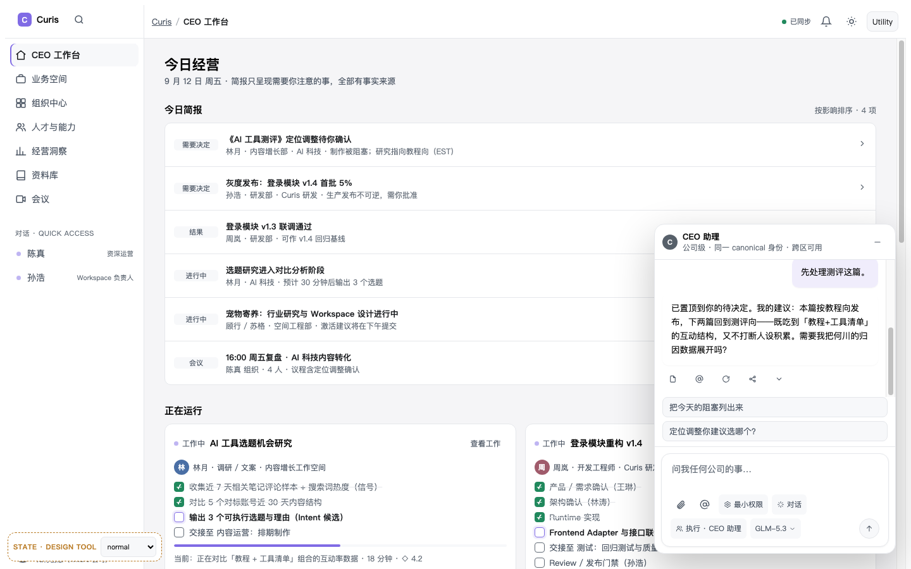
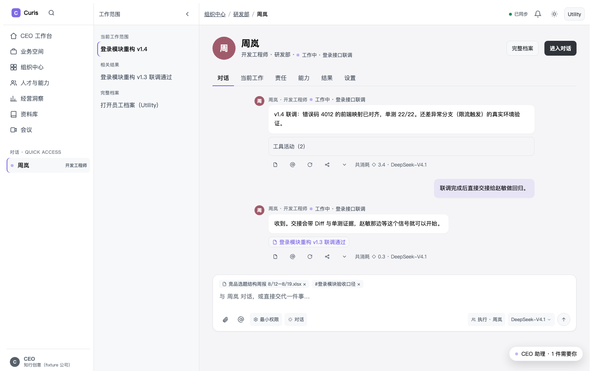
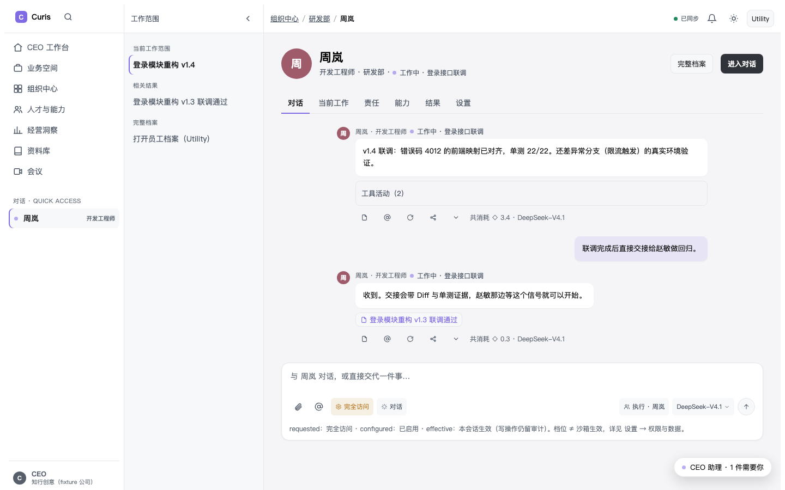
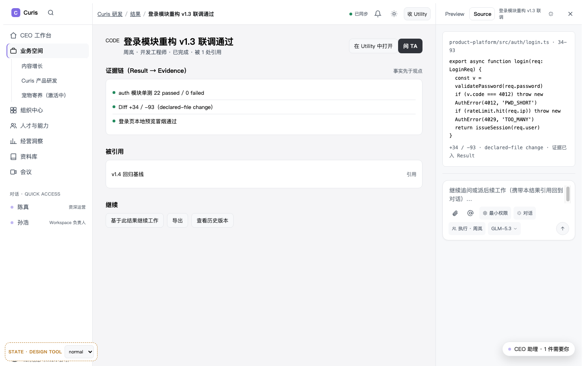

Curis HIFI Visual Review Gallery v3 · 1440×900 · 侧栏=七区平铺 + 对话 Quick Access + 左下 CEO 用户信息（无分组、无成果库）· App: http://localhost:8765/index.html
本轮按 CEO 纠偏修正：①导航七区平铺（删除自创"工作区/组织与运营"分组）②侧栏新增对话 Quick Access（员工对话常驻）③左下=CEO 头像+公司名，上拉弹出模型配置/设置 ④移除"成果库"导航项（Result 经对象引用与路由到达）⑤共享工作区只在经营总览呈现，其他 Surface 专注域对象（Context 提供"工作区"入口）。
一级区 · CEO 工作台
一级区 · 业务空间
Content Growth 专业工作空间
RD 专业工作空间

交付总览（Layer0 Decision）CURIS ORIGINAL · P7 分层 Agent WorkingCursor 摘要 + EvoFlow 运行态 / L2·L3
Agent WorkingCursor 摘要 + EvoFlow 运行态 / L2·L3
Result · Diff UtilityCursor Preview/Source / L3一级区 · 组织中心

公司版图（Department Container）CURIS ORIGINAL Employee Conversation WorkstationCURIS ORIGINAL + ChatGPT Bubble L4
Employee Conversation WorkstationCURIS ORIGINAL + ChatGPT Bubble L4
Employee Utility DetailCURIS ORIGINAL一级区 · 人才与能力
一级区 · 经营洞察 / 资料库 / 会议
全局 Surface
 Settings（含搜索）Cursor 壳 + EvoFlow 分层 / L3
Settings（含搜索）Cursor 壳 + EvoFlow 分层 / L3
Settings · UsageCoze 用量拆分 / L2 Model / Provider（左下头像菜单）Model Provider Registry
Model / Provider（左下头像菜单）Model Provider Registry Global Search ⌘KLinear 结果/预览 / L3
Global Search ⌘KLinear 结果/预览 / L3
CEO Assistant ExpandedCURIS ORIGINALComposer FocusClaude 容器 / L3
Composer Attachment（上传/失败态）WorkBuddy File Card / L4 目标
Permission postureEvoFlow requested/effective / L3 Result PreviewCursor Preview + Follow-up / L3
Result PreviewCursor Preview + Follow-up / L3
Result SourceCursor Source / L3遗留 PARTIAL（如实）：chart 下钻 · Evidence 结构化 · Dark 未逐页重排 · 22 项 NEED MORE EVIDENCE Deferred。